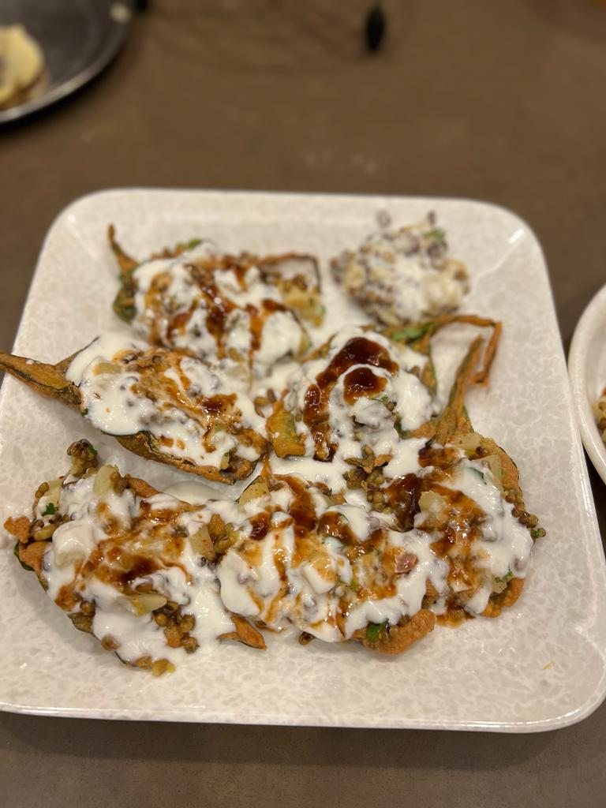

PALAK CHAAT

INGREDIENTS
- 10 leaves spinach
- 1/2 cup gram flour
- 1/2 tbps salt
- 1/2 teaspoon black pepper
- 2 tbps chopped ajwain ke patte
- 5 teaspoon yogurt(curd)
- 1 teaspoon sweet tamarind sauce
- 1 teaspoon green chutney
- 2 teaspoon vermivelli
INSTRUCTIONS
- Firstly, take a fresh spinach leaf and make a batter of gram flour and water. Add salt and pepper to the batter depending upon your taste.
- After adding salt and pepper, add 2 tbps of chopped ajwain ke patte to the mixture. Fry it in fresh oil and wait till it crisps and then douse the flame.
- Add sweet yogurt, tamarind sauce and green mint chutney to the leaf and garnish the spinach leaf with vermicelli.
- Palak chaat is ready to serve.